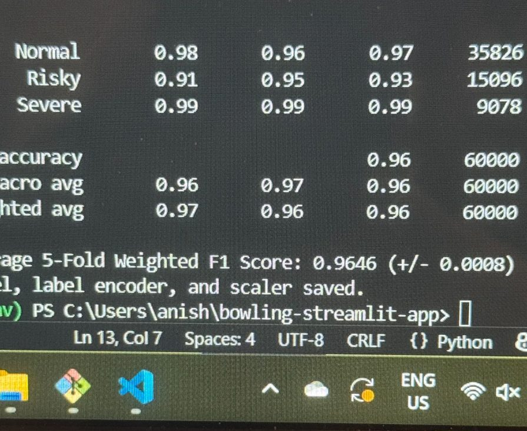
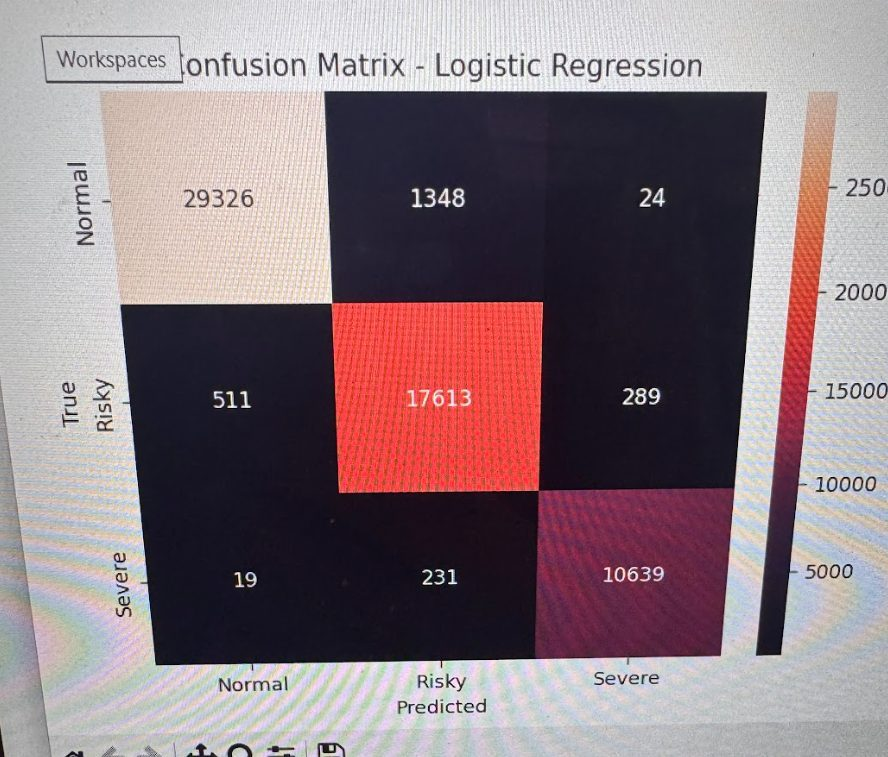
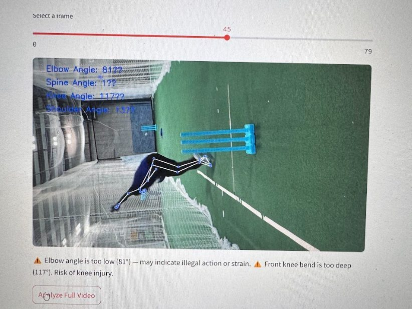

Cricket bowling risk analyzer
Individual project · May 2025 – Oct 2025
- Role
- Individual project — research, data, model, app
- Dates
- May 2025 – Oct 2025
- Stack
- Python 3.10, mediapipe==0.10.9, Streamlit, scikit-learn
- Outcome
- Used it to diagnose and correct flaws in my own bowling action, which is what got me back to competitive play
The most useful thing I did on this project was distrust a good result. My first model scored 99.9969% — two wrong out of 65,097 — and that number is the reason I rebuilt the data generator rather than shipped.
Why 99.9969% was the bug
There are not enough clean, labelled videos of cricket bowling actions available publicly to train a model on, so I generated synthetic training data: 65,097 points of joint-angle vectors labelled against safe ranges. A classifier trained on it got two of them wrong.
An accuracy that high on a three-class problem does not mean the model learned biomechanics. It means the generator produced data with no ambiguity in it — every sample sat cleanly inside its class, so the decision boundary was trivial and the model never had to learn anything that would survive a real video. The number was not a result, it was a description of my data.
So I rebuilt the generator to inject the variation that real inputs have: camera imperfection, frame-to-frame jitter in pose estimates, and genuine variation in bowling actions between deliveries and between bowlers. Retrained on that, the model landed at 96%, and the confusion matrix started making the kind of mistakes a real classifier makes — confusing adjacent risk classes rather than nothing at all.


96% is a worse headline and a better model. It is also the only version of this project I would put in front of a coach, because the earlier one would have told a bowler with a genuinely risky action that they were fine.
Establishing the safe ranges
The labels had to come from somewhere real. I consulted Level 2 and Level 3 ICC-recognised coaches — including coaches who have played for and coached top-ranked cricket nations — to establish the safe ranges for spine, knee, shoulder and elbow angles, and for hip-to-shoulder separation. Those ranges are the ground truth the whole system rests on; without them the model would have been fitting my own guesses.
Pose extraction and the version pin
Joint angles come from MediaPipe pose landmarks, extracted per frame and assembled into the angle vectors the classifier reads. The requirement pins mediapipe==0.10.9 deliberately: later releases removed functions this code depends on, and the pin is the difference between a repo that runs and a repo that raises an import error on a reviewer’s machine.
The app
The Streamlit app does two things. It gives a whole-clip risk rating from a separate clip-level model, and it lets you step through the delivery frame by frame — every fifth frame — with the pose skeleton drawn on the video and the joint angles printed alongside the warnings.
Showing every fifth frame is a deliberate interface decision rather than a performance one. Pose tracking fails in visible ways: a limb swaps sides, a landmark jumps. If the tool only reported a risk score, a user would have no way to tell a real warning from a tracking failure. Drawing the skeleton lets them check the input before they trust the output.

Outcome
I built this during injury rehab, and the first thing I did with it was point it at my own action. It identified the flaws I was carrying, and correcting them is what let me return to competitive play. I am now a member of the Georgia Tech Cricket Club.
What I would change
The model is still trained entirely on synthetic data, and adding realistic noise to a generator is not the same as validating against reality. The honest next step is a held-out set of real labelled deliveries — even a few dozen, scored by the same coaches — because until that exists, 96% is an accuracy against my own assumptions rather than against bowling.
I would also stop treating risk as three discrete classes. Injury risk is continuous, and a bowler just inside a boundary is being told something quite different from what the biomechanics support.